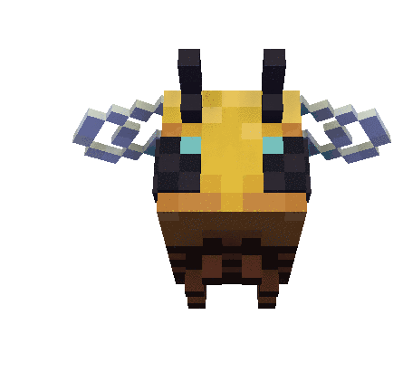

zadanie1.html
<html> <head> <title>Zadanie1 </title> <script language="JavaScript"> function WinOpen_bab() { window.open("obraz.html","okienko","toolbar=no,directories=no,menubar=no,height=280,width=160,top=200,left=200"); } </script> </head> <body> <h1 style="text-align: center;">Babaeyv Lev</h1> <form> <input type="button" name="przycisk" value="Obraz" onclick="WinOpen_bab(' ')"> </form> </body> </html>
obraz.html
<html> <head> <script type="text/javascript"> function okno_zamknij_bab() { window.close() } </script> </head> <body>  <input type="button" value="zamknij okno" onclick="okno_zamknij_bab()"/> <h2>KOMPUTER</h2><br> <p>1)w 1995 roku</p> <p>2)JavaScript jest przede wszystkim językiem skryptowym – to znaczy interpretowanym.</p> <p>3)Nie musi zostać skompilowany do kodu maszynowego, aby można było zobaczyć efekty jego działania.</p> <p>4)Ze względów bezpieczeństwa JavaScript ma znacznie ograniczone uprawnienia dostępu do zasobów komputera, przy użyciu którego przeglądana jest dana strona, a wszelkie odwołania do funkcji i obiektów wykonywane są w trakcie wykonywania programu.</p> <p>5)JavaScript jest językiem zorientowanym obiektowo, ponieważ implementuje enkapsulację, polimorfizm, dziedziczenie<br></p> </body> </html>